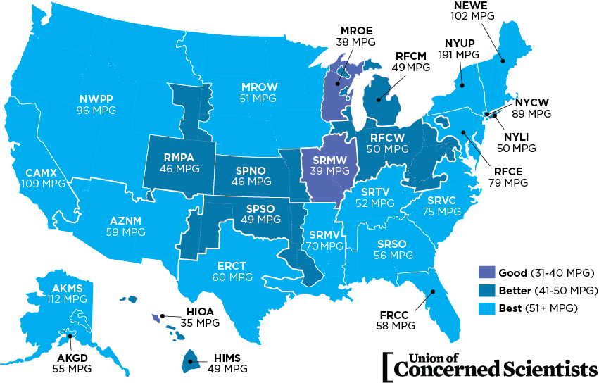

All-electric vehicles (EVs) have an electric motor instead of an internal combustion engine.
The vehicle uses a large traction battery pack to power the electric motor and must be plugged in to a charging station or
wall outlet to charge. Because it runs on electricity, the vehicle emits no exhaust from a tailpipe and does not contain the typical liquid fuel components,
such as a fuel pump, fuel line, or fuel tank. More Info? We Have It
Battery (all-electric auxiliary): In an electric drive vehicle,
the auxiliary battery provides electricity to power vehicle accessories.
Charge port: The charge port allows the vehicle to
connect to an external power supply in order to charge the traction battery pack.
DC/DC converter: This device converts higher-voltage DC power from the traction battery pack to the lower-voltage DC power needed to run vehicle accessories and recharge the auxiliary battery.
Electric traction motor: Using power from the traction battery pack, this motor drives the vehicle's wheels. Some vehicles use motor generators that perform both the drive and regeneration functions.
Onboard charger: Takes the incoming AC electricity supplied via the charge port and converts it to DC power for charging the traction battery.
It monitors battery characteristics such as voltage, current, temperature, and state of charge while charging the pack.
Power electronics controller: This unit manages the flow of electrical energy delivered by the traction battery, controlling the speed of the electric traction motor and the torque it produces.
Thermal system (cooling): This system maintains a proper operating temperature range of the engine, electric motor, power electronics, and other components.
Traction battery pack: Stores electricity for use by the electric traction motor.
Transmission (electric): The transmission transfers mechanical power from the electric traction motor to drive the wheels
Battery electric vehicles, or BEVs, use electricity stored in a battery pack to power an electric motor and turn the wheels. When depleted, the batteries are recharged using grid electricity, either from a wall socket or a dedicated charging unit.
Since they don’t run on gasoline or diesel and are powered entirely by electricity, battery electric cars and trucks are considered “all-electric” vehicles. When driven, BEVs don’t produce tailpipe pollution—they don’t even have a tailpipe. However, the electricity they use may produce heat-trapping gases and other pollution at the source of its generation or in the extraction of fossil fuels. The amount of pollution produced depends on how the electricity is made. In the United States, battery electric cars charged off the dirtiest coal-dominated grid still produce less pollution than their gasoline-powered counterparts. BEVs powered by renewable energy sources like wind or solar are virtually emission-free.
Not using gasoline or diesel also means that battery electric cars are significantly cheaper to fuel than conventional vehicles.
Exact comparisons depend on the vehicle model and fuel prices, but driving a BEV can save drivers over $1,000 annually in gasoline money
Theres More To It

More Detail
Wanna Know Some Fun Facts? Cool! Me Either but here is some anyway
Fun Facts

Extra Notes, Sike!